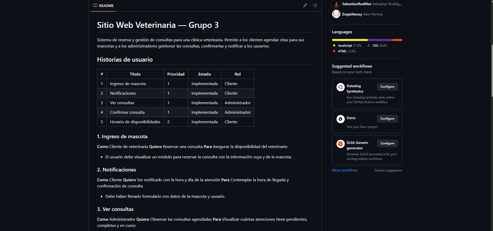

Semana 5
15 de junio de 2026
Fecha y hora
Semana 5 / 15-06-2026 (5:00pm a 8:30pm – Presencial)
Actividades realizadas durante la clase:
- Presentación sobre SCRUM realizada por el profesor.
- Actividad grupal con el sitio web desarrollado por el profesor para practicar SCRUM (Desarrollar 5 historias de usuario).
- Se realiza el Quiz #2 para finalizar la clase.
Soluciones implementadas
Distribución entre roles y tareas por parte de los compañeros del grupo para realizar la actividad grupal.
Evidencias (capturas, código, diagramas)
Captura 1: Práctica sobre SCRUM realizada en la clase presencial de forma grupal.

Reflexiones o mejoras futuras
Que haya buena organización, planificación del proyecto y distribución de roles para evitar problemas en el futuro.
Notas generales
Metodología SCRUM
Conceptos Generales:
- Definición: Scrum es un marco de trabajo que permite a los equipos trabajar de manera eficiente en proyectos complejos, entregando valor de manera continua y adaptándose a los cambios.
- Pilares del Empirismo: El marco se basa en tres pilares fundamentales:
- Transparencia: Todos los aspectos del trabajo deben ser visibles para los responsables del resultado.
- Inspección: El progreso y los artefactos deben revisarse frecuentemente.
- Adaptación: Si se detectan desviaciones, los procesos o materiales deben ajustarse lo antes posible.
- Valores de SCRUM: Los equipos se rigen por el Compromiso (con los objetivos), el Coraje (para trabajar problemas difíciles), el Foco (en el trabajo del Sprint), la Apertura (sobre los desafíos) y el Respeto mutuo.
Roles en el Scrum Team:
El Scrum Team es la unidad fundamental, descrita como un equipo pequeño, sin jerarquías ni subequipos, enfocado en un solo objetivo a la vez.
- Product Owner (Dueño del Producto): Su responsabilidad principal es maximizar el valor del producto resultante del equipo. Además, debe gestionar, ordenar y hacer transparente el Product Backlog, así como crear y comunicar explícitamente el objetivo del producto.
- Scrum Master: Es el encargado de facilitar los eventos Scrum según se requiera, asegurando que sean positivos, productivos y respeten el tiempo establecido. También entrena al equipo en autogestión, remueve impedimentos y ayuda al equipo a enfocarse en crear incrementos de alto valor.
- Developers (Desarrolladores): Son los responsables de crear el plan del Sprint (Sprint Backlog), instalar la calidad adhiriéndose a la definición de "Terminado" y adaptar su plan diariamente hacia el objetivo. Mantienen una responsabilidad mutua como profesionales.
Eventos en SCRUM:
Permiten planificar, revisar, mantener la alineación y adaptarse.
- Sprint: Es el evento contenedor de todos los demás, con una duración máxima de 1 mes (típicamente de 2 a 4 semanas). Su duración es fija, no se extiende, y un nuevo Sprint inicia inmediatamente tras terminar el anterior.
- Sprint Planning: Define el trabajo a realizar. Participa todo el equipo y dura un máximo de 8 horas para un Sprint de 1 mes.
- Daily Scrum: Reunión de 15 minutos exclusiva para Developers (otros solo observan), enfocada en inspeccionar el progreso, adaptar el Sprint Backlog y crear un plan para las próximas 24 horas.
- Sprint Review & Retrospective: En ambos eventos participa todo el equipo y tienen una duración máxima de 3 horas para un Sprint de 1 mes. Su propósito conjunto es planificar formas de aumentar la calidad y efectividad, inspeccionando el último Sprint en cuanto a individuos, procesos, herramientas y la definición de "Terminado".
Artefactos y sus Compromisos:
Los artefactos representan trabajo o valor y maximizan la transparencia para todos. Cada artefacto cuenta con un compromiso específico:
- Product Backlog: Es la única fuente de trabajo y consiste en una lista ordenada de lo necesario para mejorar el producto. Su compromiso es el Objetivo del Producto (Product Goal).
- Sprint Backlog: Es el plan de los Developers que pronostica la funcionalidad disponible en el próximo incremento. Su compromiso es el Objetivo del Sprint (Sprint Goal).
- Incremento (Increment): Es un paso concreto y utilizable hacia el objetivo del producto; cada incremento se suma a los anteriores. Su compromiso es la Definición de "Terminado" (Definition of Done).
Conceptos Claves y Principios Fundamentales:
- Definición de "Terminado" (DoD): Descripción formal del estado del incremento cuando cumple las medidas de calidad, brindando un entendimiento compartido del trabajo completado.
- Objetivo del Producto: Meta a largo plazo que describe un estado futuro del producto.
- Objetivo del Sprint: Meta única que da coherencia y foco al equipo para trabajar juntos.
Principios Básicos:
- Desarrollo Iterativo e Incremental: Entregas frecuentes de incrementos utilizables con retroalimentación continua y adaptación.
- Autoorganización: El equipo decide cómo trabajar sin gestión externa y tiene responsabilidad colectiva.
- Colaboración Cross-funcional: El equipo agrupa todas las habilidades necesarias, sin dependencias externas.
Beneficios: A nivel de producto permite entrega frecuente de valor y mayor calidad; a nivel de equipo aumenta la motivación y mejora continua; a nivel organizacional brinda transparencia, reduce riesgos y mejora el retorno de inversión (ROI).